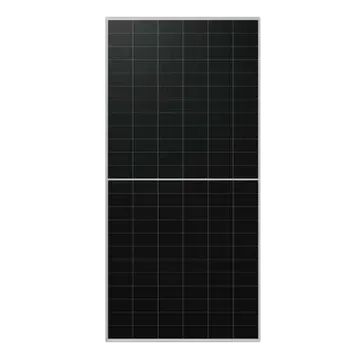

Потужність
Враховуємо доступну площу, робочу напругу стрінга та допустимі параметри інвертора.
Підберемо модулі за потужністю, типом конструкції та сумісністю з інвертором. У каталозі є односторонні й двосторонні панелі з технічними характеристиками та datasheet.

Враховуємо доступну площу, робочу напругу стрінга та допустимі параметри інвертора.
Monofacial підходить для більшості дахів, bifacial може додатково використовувати світло із задньої сторони.
Перевіряйте модель, гарантію та офіційний datasheet виробника перед замовленням.
METON допомагає не просто купити панелі, а зібрати сумісну систему: інвертор, захист, кабельна частина, кріплення та за потреби акумулятори.
Зателефонуйте за номером +380 93 285 25 57 або скористайтеся конфігуратором.
Відкрити конфігуратор